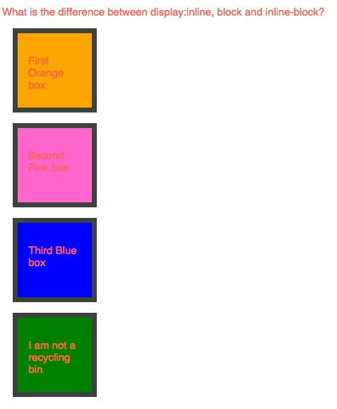
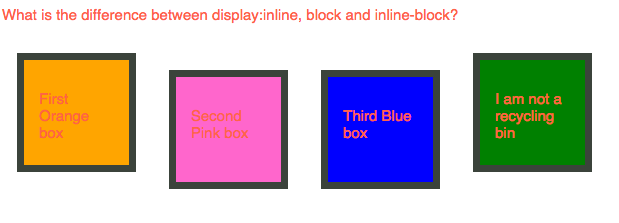

Margin, Padding and Border
Margin is exactly like what we use for print paper - the areas that you want to put the contents in within the browser. "margin:auto" means that margin will automatically calculated and put contents in the exactly middle in width.
Padding is the pad distance between contents. In this graph, the space between contents and border are exactly 100px in each side.
Border is literally a border of the contents. Border has several property and I've used, border-color(#ff6699), style(dotted) and width(10px).
Display - Difference between Inline-Block and Block
Block is a default setting of display and it will take up whole line of block.
Inline-block displays elements in inline but keep the style of block. Margin or padding can be applied in style.
DOM (Document Object Model)
DOM is like upside-down tree structure of the document(web). It provids a structured representation of the document. DOM is helpful to understand the relationship between objects like parents, sibling and children. These are brilliant ways to target specific element to style and action with CSS and JavaScript.
Most Challenging concept of the week - Position : fixed, static, absolute and relative
While working with CSS, position was confused me the most. Here is how I understand the each property
- Static: Default value
- Fixed: Positioned related to the browser
- Relative: Most make sense position. This will actually move things around as I expect
- Absolute: Positioned related to its first positioned element - which I am still hard time to understand the concept of 'first positioned ancestor element
This week, I've played with a couple of CSS boxes(div width and height and background-color) to understand 'POSITION' property.
Boxes in a row

In order to make boxes in a row, CSS property - Top, Bottom, Right and Left were used.
Make the boxes have equal distance between them

In order to make each boxes with same distance, I would like to use position: inline-block but failed. Instead, I calculated every box size and made manual adjustment for each position.
Move all the boxes into one column

In order to move all boxes into one column, I used CSS position:left property
Resize the boxes so they are 30% of their original size

I was looking for a way to complete the task with one property. I tried with resize and box-sizing property but failed. So I calculated and made adjust the size of the boxes manually. Once I find the better solution, I will re-post this.
Make the static div go to the bottom and have an absolute positiion (no matter what, it should always be at the bottom of the page - but not in the browser window) Make the footer 100% the width of the screen

In order to make the static div stay in the bottom, I used position:fixed, bottom: 0 properties.
Make the absolute div a header at the top of the page with a fixed position so it's always at the top of the browser window. Make the width 95% of the entire screen and centered

In order to make absolute div stay at the top, I used position: fixed, top: 0 and width: 95%.
Move the relative div position to the right so it's like a right sidebar.

In oder to make the relative div position to the right, I used position:right.